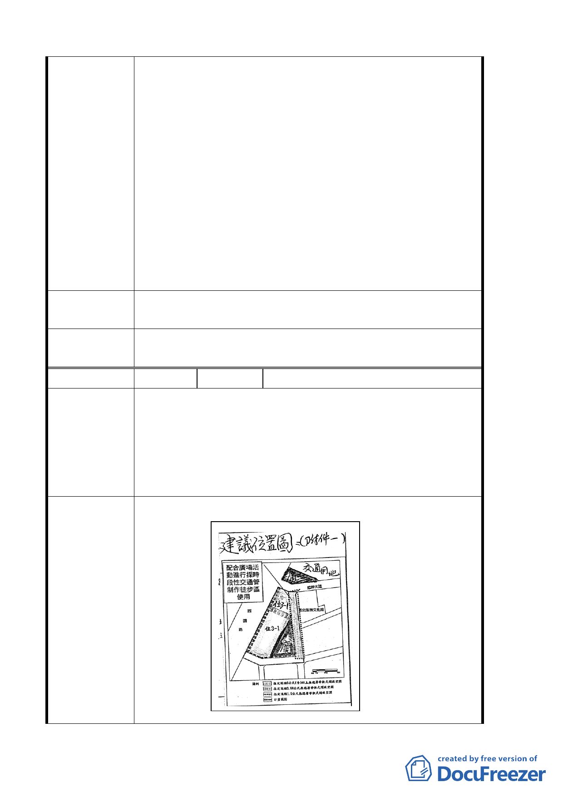

建議辦法
委員會
決議
編號
陳情理由
不准增建或改建，將造成本人權利受損及房地產
價值滑落，本人為一守法公民，幾十年來房屋稅、
土地稅皆如期繳納。
5. 早在民國五十五年本人就在此經營成衣業，店門
前可說是車水馬龍、門庭若市呀！此地可說算是
早期萬華成衣業最興盛的地段，直到民國六十年
後市府在鐵路平交道上建西園陸橋，再將原本平
交道圍了起來，使本地猶如無尾巷的巷底，乏人
問津，商家生意一落千丈，本人可說身受其害，
卻還須被徵收高額的工程受益費。故此次不當的
計畫，將再次使本人及周遭居民的權利及財產蒙
受損失，這次我們不能在沉默了，望 貴局能聽聽
居民的心聲，廣納各方意見後，重新評估。
建議不設廣場將可增長緊鄰西園路二段大馬路的建
築線，則可增加店面家數，以利原商家分配營業。
同編號 3。
5 陳情人 蘇文正、尹文伶、宋啟弘
1. 本地主堅決對都發局將住三之ㄧ住宅區改為廣場
用地。
2. 廣場設在住三住宅區或設在交通用地，可拉長面
向西園路二段店面的建築線，店面數增加足夠分
配，並增加產值。
3. 交通用地長期閒置不用無法繁榮此地區。
1.建議廣場應設於住 3 地區或改在交通用地，詳下
圖示。
建議辦法
8